About the server
PlanetNostalgia is a Minecraft Alpha 1.1.2_01 server. We are a server hosting the iconic "Nuclear-Green-Grass" era. And we exist to give people nostalgia, maintain the golden days of Minecraft and allow people to experience Minecraft Alpha once again!
We use heavily modified server software, but the game still feels like classic Alpha. Players can protect their builds and chests, and staff have logging and rollback tools to deal with griefing. We also have anti-cheat protection to help keep the server fair.
We also run regular minigames and server events. These include Spleef, BlockBall, TNT Run, WordScramble, build competitions, Discord and PvP events, with more added from time to time.
What we have
- Heavily modified Minecraft Alpha 1.1.2_01 server software
- Chest and land protection
- Economy and player shops
- Logging and rollback tools
- Anti-cheat protection
- PvE support and PvP events
- Spleef, BlockBall, TNT Run and WordScramble
- Build competitions and other server events
- A small and friendly community
A video from the server
How to join
Not sure how to get Minecraft Alpha running? These two videos show you how to set everything up and join the server.
Once you are set up, use planetnostalgia.net to connect to the server. You can also connect with 51.255.162.33.
How to join - guide 1
How to join - guide 2
You will need Java and a launcher to play. Download Java here, then download the Betacraft Launcher here.
Community
Our Discord is where most server news and discussion happens. Feel free to join even if you only want to have a look around first.
Join our Discord | Telegram group
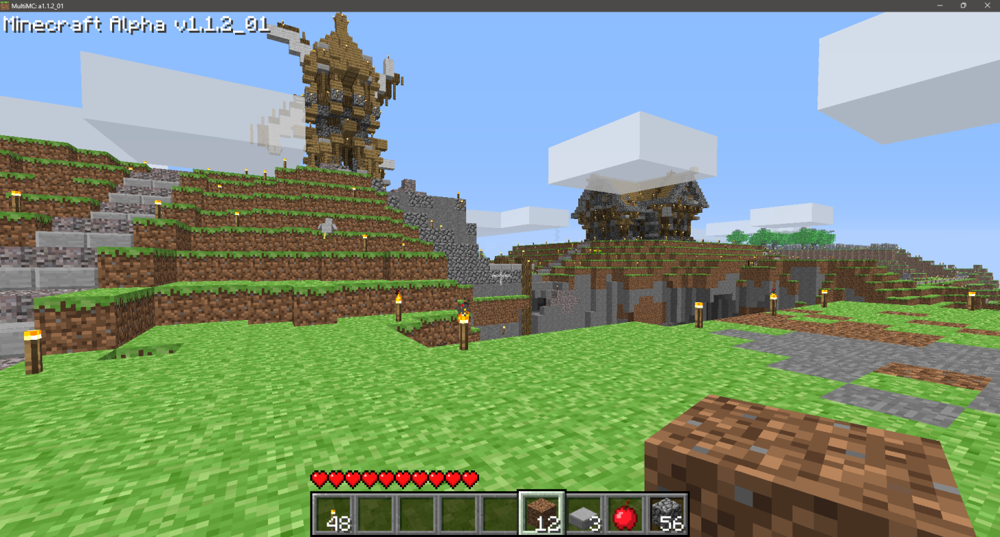
Photos from the server
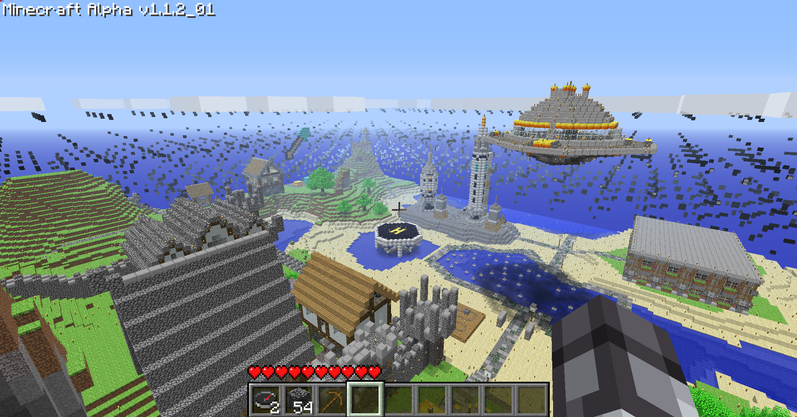
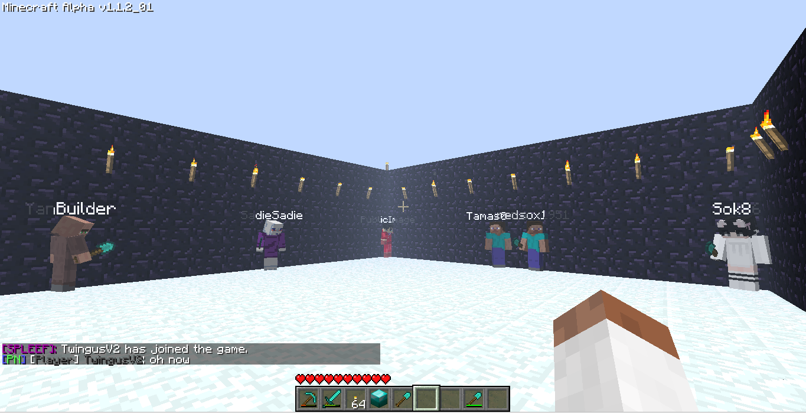
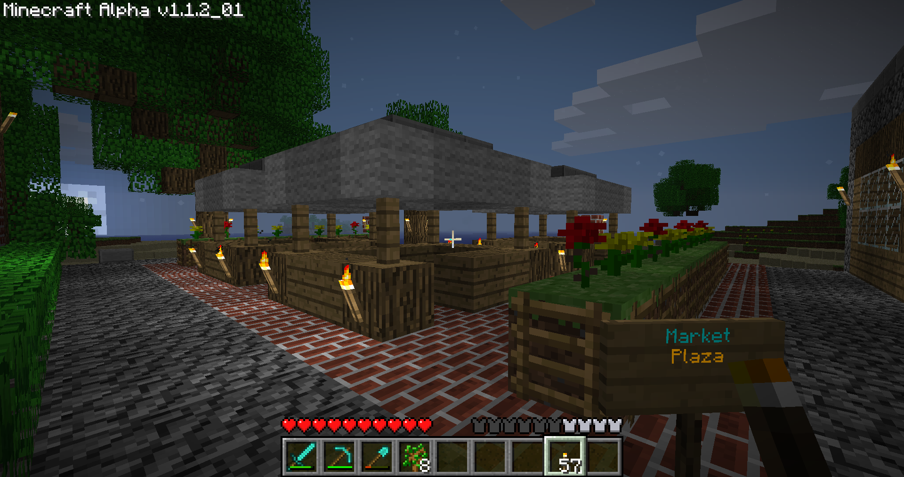
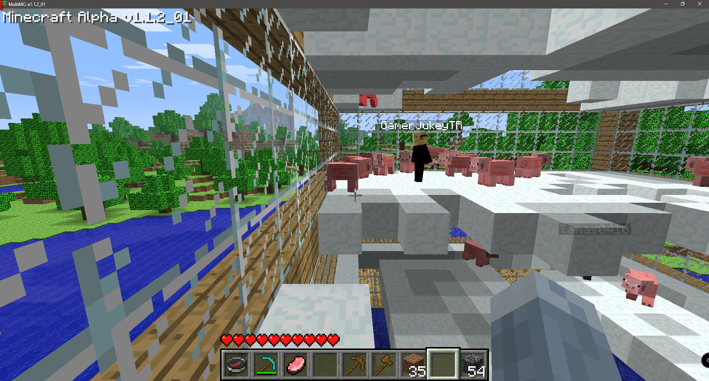
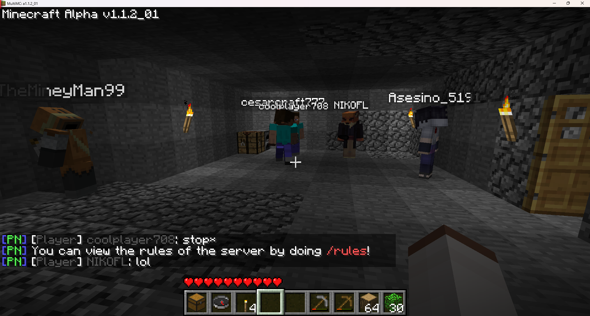
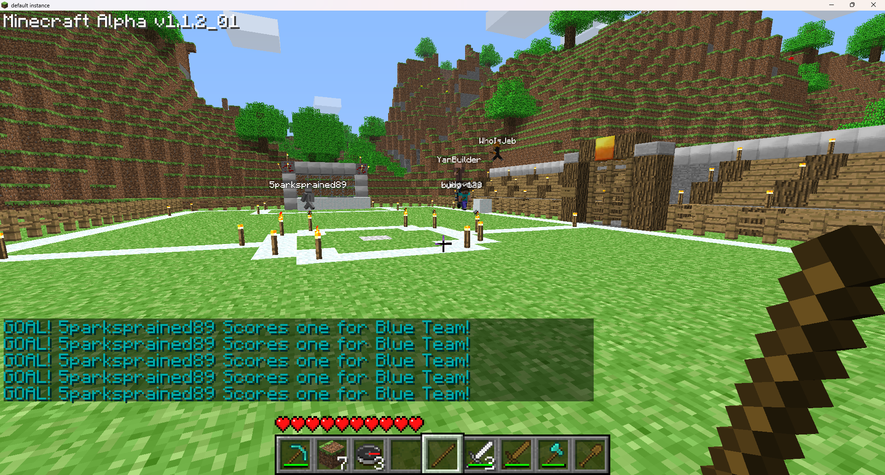
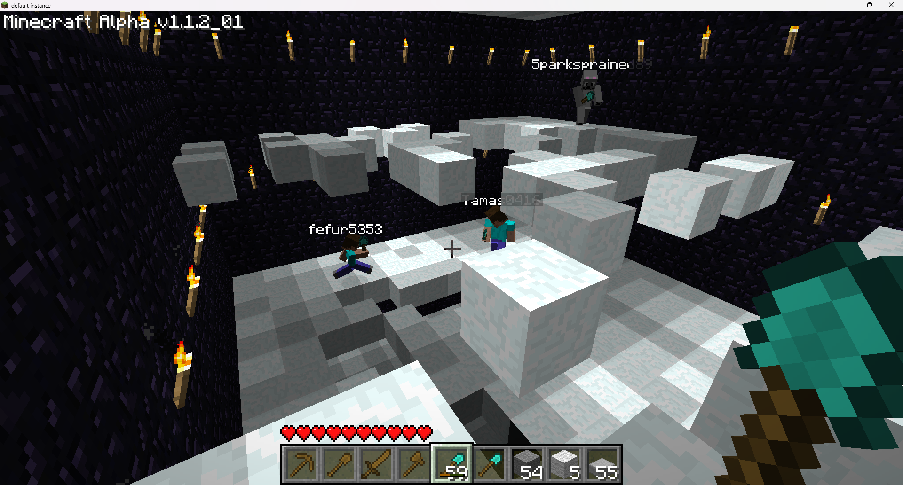
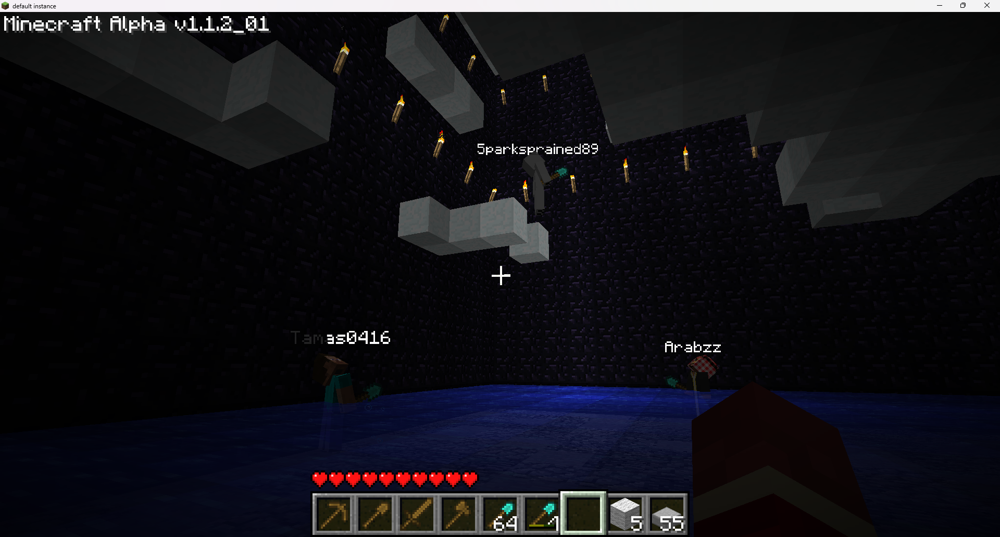
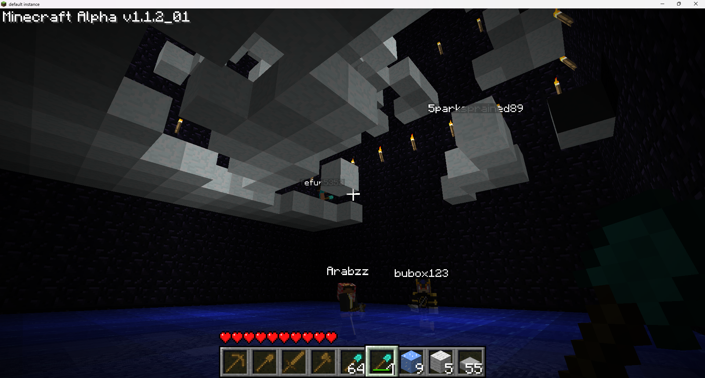
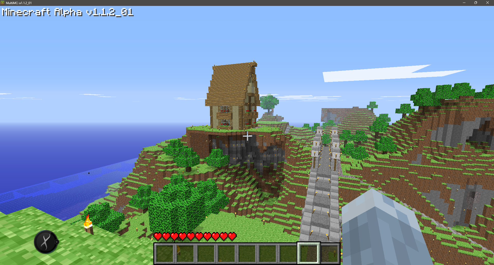
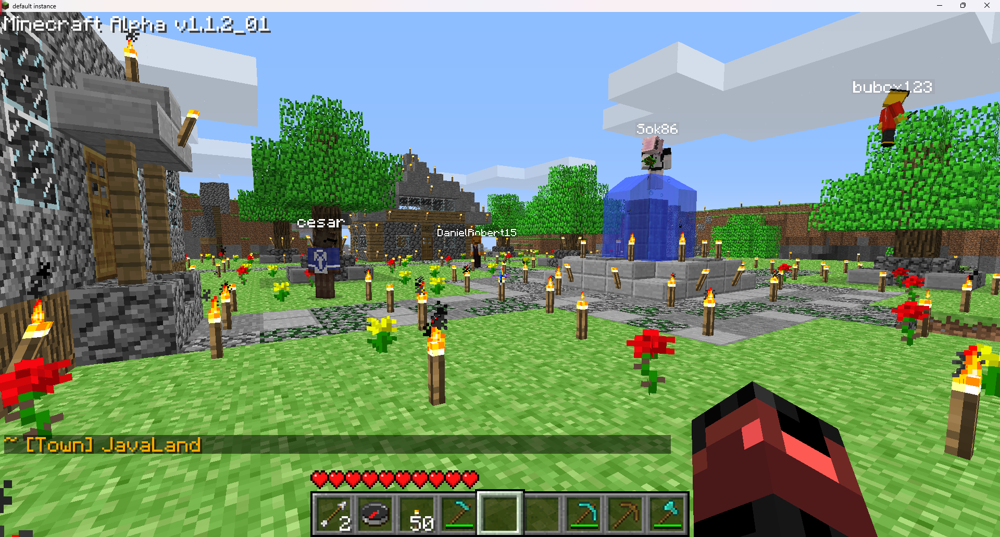
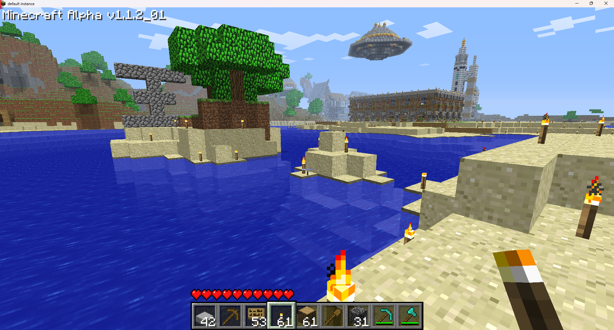
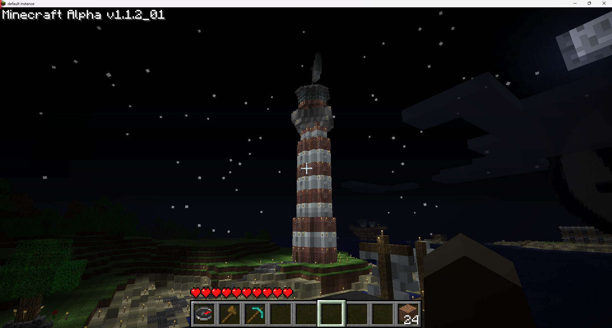
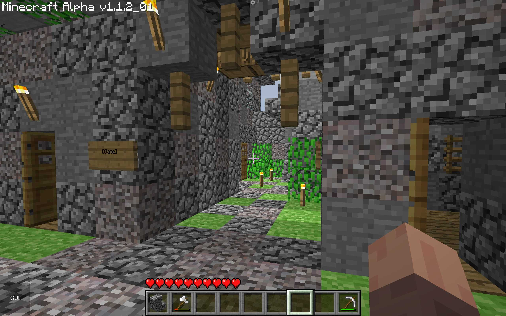
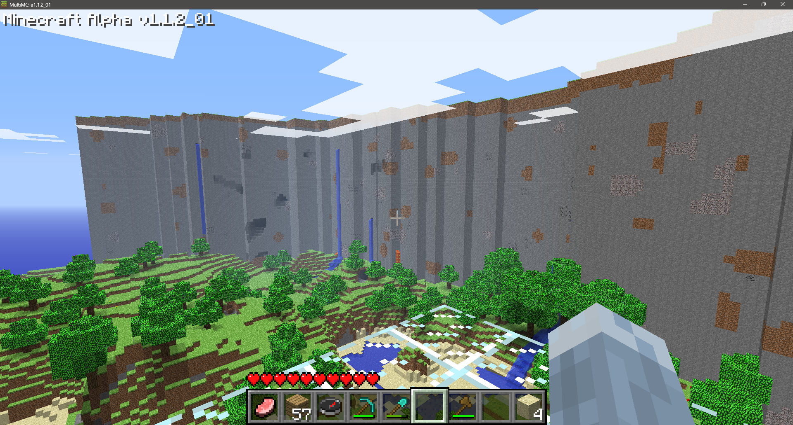
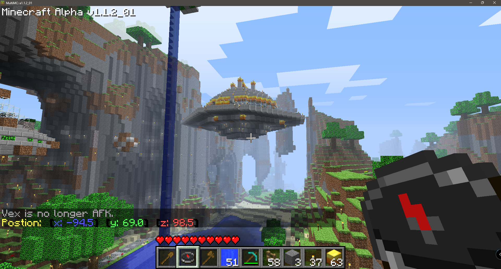